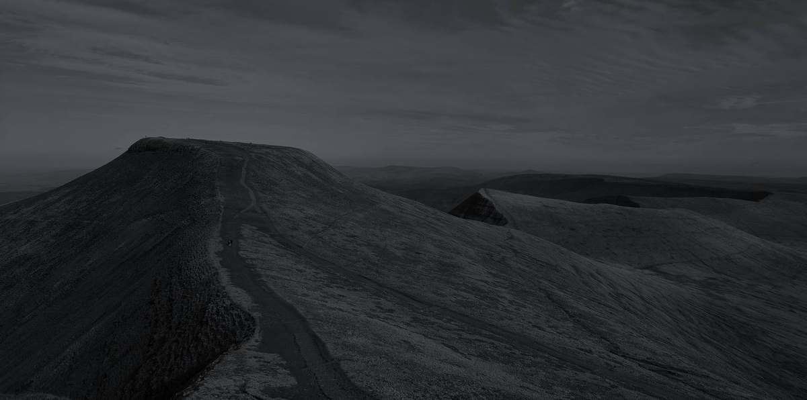
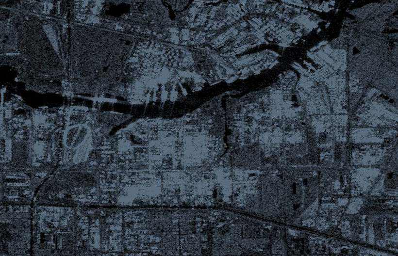

We are instructed when a decision cannot be made on the papers alone — and every finding is graded, sourced and verified before it reaches you.
Diligence before you commit — counterparties, principals, beneficial ownership, sanctions exposure, and the political terrain around a deal.
Asset tracing, enforcement, fraud and internal enquiries — instructed by advisors and prepared to be relied upon.
Provenance analysis on documents and imagery, corroborated against independent sensors. The part nobody else offers.
A convincing image of a real place can now be made in minutes. So every file entering a Cribyn case room is tested for its own origin, and location claims are put to independent satellite radar.
